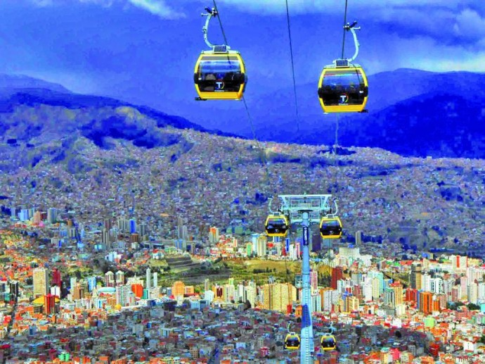

<!-- Projects Section -->
<section id="projects" class="projects-section bg-light">
  <div class="container">

    <!-- Featured Project Row -->
    <div class="row align-items-center no-gutters mb-4 mb-lg-5">
      <div class="col-xl-8 col-lg-7">
        
      </div>
      <div class="col-xl-4 col-lg-5">
        <div class="featured-text text-center text-lg-left">
          <h4>Nuestra Cultura</h4>
          <p class="text-black-50 mb-0">La ministra de Culturas y Turismo de Bolivia, Wilma Alanoca, añadió que los principales objetivos de dicho acuerdo son “salvaguardar, preservar y poner en valor el patrimonio cultural de comunidades rurales con el fin de crear una alternativa económica sostenible que contribuya a la reducción de la pobreza”.</p>
        </div>
      </div>
    </div>

    <!-- Project One Row -->
    <div class="row justify-content-center no-gutters mb-5 mb-lg-0">
      <div class="col-lg-6">
        
      </div>
      <div class="col-lg-6">
        <div class="bg-black text-center h-100 project">
          <div class="d-flex h-100">
            <div class="project-text w-100 my-auto text-center text-lg-left">
              <h4 class="text-white">Atraccion Turistica</h4>
              <p class="mb-0 text-white-50">En cuanto a las atracciones históricas, Bolivia ocupa el quinto lugar con una preferencia del 17%, mientras que los países más atractivos en este apartado son México con 82%, Perú, con 74% y Colombia con el 19%..</p>
              <hr class="d-none d-lg-block mb-0 ml-0">
            </div>
          </div>
        </div>
      </div>
    </div>

    <!-- Project Two Row -->
    <div class="row justify-content-center no-gutters">
      <div class="col-lg-6">
        
      </div>
      <div class="col-lg-6 order-lg-first">
        <div class="bg-black text-center h-100 project">
          <div class="d-flex h-100">
            <div class="project-text w-100 my-auto text-center text-lg-right">
              <h4 class="text-white">Fantasticos Paisajes</h4>
              <p class="mb-0 text-white-50">Bolivia es un Estado Plurinacional, independiente y soberano situado en el centro-oeste de América del Sur. El extenso territorio de Bolivia está dotado de grandes atractivos y destinos turísticos, que hacen del Turismo en Bolivia una industria sin motor con muchas potencialidades.</p>
              <hr class="d-none d-lg-block mb-0 mr-0">
            </div>
          </div>
        </div>
      </div>
    </div>

  </div>
</section>